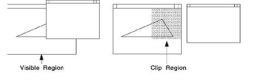

Clipping regions are clipping areas defined (as regions) by one or more rectangles in device coordinates. Because they are defined in device coordinates, clipping regions do not suffer from the rounding errors associated with other types of clipping. Therefore, they are ideally suited to redraw part of the picture without boundary discontinuities, for example, after a BitBlt operation has been used to scroll a picture in a window.
Regions are not available automatically for clipping. To select an existing region as the current clipping region, use GpiSetClipRegion. By default, the clipping region is the same size as the drawing surface. Only one clipping region can exist in the presentation space at one time. To end clipping to the current clipping region, deselect it by calling GpiSetClipRegion with a NULL region handle. A deselected clipping region retains the effects of any changes made to it while it was a clipping region and can be reselected.
You do not have to deselect the current clipping region before selecting another. Each selected clipping region automatically replaces the one before it. If a clipping region exists when you call GpiSetClipRegion, the existing clipping region reverts to being a normal region, and its handle is returned.
Clip paths and clip regions share a common implementation, but clip regions are faster to create than clip paths. This might be a performance factor when designing your application for repairing the screen or redrawing the picture in a client window after the display has changed. The following figure illustrates this use of regions.
Screen Repairing
Note: GpiSetClipRegion does not cause graphics orders to be added to the current segment. Therefore, variations in the clip region must not be used to construct the picture. The clip region is intended to define a fixed clipping area for the entire picture.
When you select the current clipping region, none of the region-related GPI functions can be used for that region. The PM provides a series of functions that mirror the region-related functions. However, all of these functions work in world coordinates rather than device coordinates, and, therefore, are subject to current transformations.
Any of the following functions can be used to get information about or to redefine the current clipping region.
You can request the dimensions of the smallest rectangle that encloses all current clipping boundaries by calling GpiQueryClipBox. The following boundaries are included in this calculation:
GpiIntersectClipRectangle redefines the current clipping region to the intersection of the existing clipping region with the rectangle whose dimensions you supply in this function. This has the same effect as CRGN_AND in GpiCombineRegion.
You also can redefine the current clipping region using GpiExcludeClipRectangle. This function excludes a specified rectangle from the current region and has the same effect as CRGN_DIFF on GpiCombineRegion.
The current clipping region can be moved from its current position using GpiOffsetClipRegion.
GpiPtVisible tells you whether a point, expressed in world coordinates, is visible on the screen. A point is visible if it is within all current clipping boundaries and is in the visible region of the window.
GpiRectVisible tells you whether any part or the whole of a rectangle, whose dimensions you supply in world coordinates, is visible on the screen. The rectangle is visible if it intersects both the visible region of the window and all current clipping boundaries.